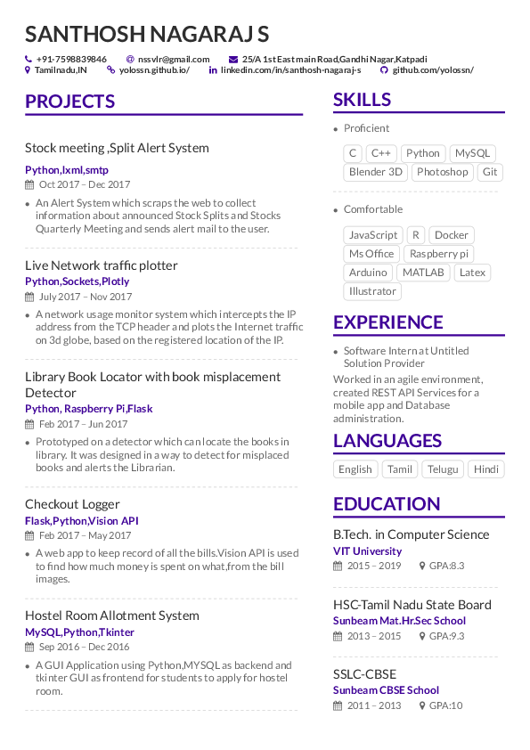

S.Santhosh Nagaraj
Student
See my work

"Everything Begins with An Idea"- Earl Nightengale
Out of the "N" number of ideas that appeared in my mind few pushed my self to get my hands dirty and convert it into projects.
Stock meeting/Split Alert System
Tags:Python,lxml,smtp
An Alert System which scraps the web to collect
information about announced Stock Splits and Stocks
Quarterly Meeting and sends alert mail to the user.
Live Network traffic plotter
Tags:Python,Sockets,Plotly
A network usage monitor system which intercepts the IP
address from the TCP header and plots the Internet traffic
on 3d globe, based on the registered location of the IP.
Checkout Logger
Tags:Flask,Python,Vision API
A web app to keep record of all the bills.Vision API is used
to find how much money is spent on what,from the bill
images.
Hostel Room Allotment System
Tags:MySQL,Python,Tkinter
A GUI Application using Python,MYSQL as backend and
tkinter GUI as frontend for students to apply for hostel
room.
